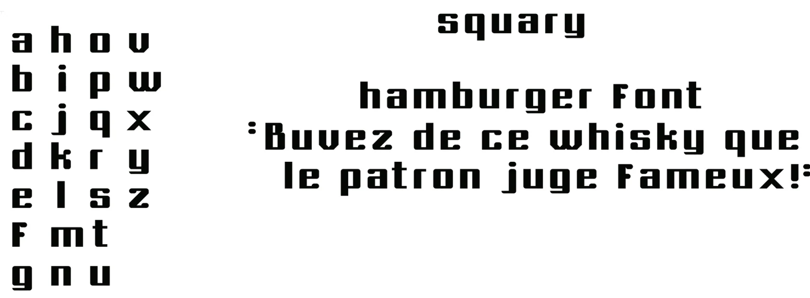

Squary
Création d’une typographie à partir de modules.

Deux modules m’ont servi à dessiner toute la typographie. Le but était d’utiliser un minimum de formes.
Création d’une typographie à partir de modules.

Deux modules m’ont servi à dessiner toute la typographie. Le but était d’utiliser un minimum de formes.